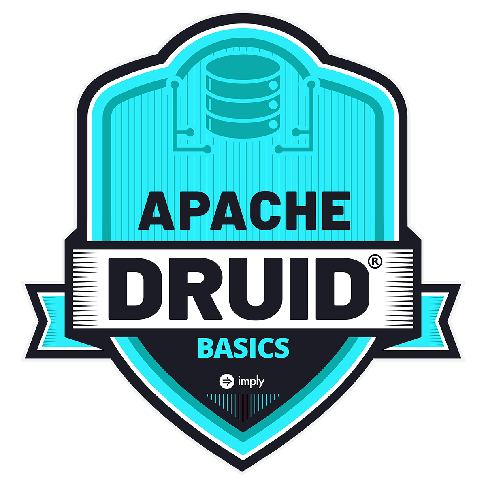

Welcome to Learn Druid!
If you’re new to Apache Druid, take “Apache Druid Basics” to get hands-on with this open source real-time analytics database from Apache. Hear about how Druid came to be, and about all of the database’s processes.
Apache Druid Basics (2024)

Druid is becoming the go-to cloud-native answer to scalable time-series data storage and analytics. If you have time-series data, you need to know how to use Druid.
TBD Get started link
Apache Druid Data Modeling (2024)
Data modeling is the key to get the most from Druid. Learn how to ingest data and create data models that are both fast and scalable.
TBD Image
TBD Get started link
Apache Druid Streaming (2024)
Learn the principles of ingesting and working with event streams.
TBD Image
TBD Get started link
Apache Druid Monitoring (2024)
Dive into hands-on exercises to learn how to use the obervability logs and metrics emitted by Druid.
TBD Image
TBD Get started link
This service is provided by Imply: this domain and service are not affiliated with, endorsed by, or otherwise associated with the Apache Software Foundation (ASF) or any of its projects. Apache, Apache Druid, Druid, and the Druid logo are either registered trademarks or trademarks of ASF in the USA and other countries.